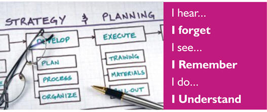

ANFCBII
On October 26th, 1968 at Forestry Road, Benin City, Nigeria, Archbishop B.A. Idahosa started what eventually became the All Nations...
Church of God Mission International was founded by Archbishop Benson A. Idahosa in Benin City in 1968.
Church of God Mission International was founded by Archbishop Benson A. Idahosa in Benin City in 1968. The Lord told him precisely "I have called you that you might take the gospel around the world in my name. Preach the gospel, and I will confirm my Word with signs following. ".... Fire in His Bones ... Pg. 69. The church started with seven adults and five children in a shop front along Forestry road in Benin City but today we have over a thousand branches all over Nigeria and the shores beyond. Since the passing on of Archbishop Benson A. Idahosa, the church has been under the leadership of Archbishop Margaret Benson- Idahosa; his wife. The ministry is still thriving on the mission to reach lost souls and impact our world.
On October 26th, 1968 at Forestry Road, Benin City, Nigeria, Archbishop B.A. Idahosa started what eventually became the All Nations For Christ Bible Institute International (ANFCBII).
In the beginning it was a two week Bible School for his first converts. By 1971, it had grown to a three month programme with veteran missionary, Edgar Perkins as Principal and was called New Covenant Bible Institute.
In 1975, the nine month school started with another English Principal, John Valentine, and was called Nigerians for Christ Bible Institute. The enrollment grew as the church expanded dramatically with the outpouring of the spirit in Nigerian revival.
The year 1977 saw a miraculous Accra Crusade which brought many Ghanaians students who wanted to know the secrets of power with God and signs following. It also meant the name change to All Nations for Christ Bible Institute.
The years have brought many changes to ANFCBII. From 1981, steps were taken to ensure that the academic credits of the institute would be recognized both locally and abroad.
A wider spectrum of subject was introduced, by then principal Rev. Dr. Ron Childs, including a degree programme for those who qualify. The French speaking department of the institute was established to train French speaking students. Presently, the school is being headed by Rev. Andrew Daniels from the United Kingdom as the school’s Principal.
"Learn the insiders' secrets of becoming a top leader in your organization. Win the respect and success you deserve."
The International Leadership Resource Institute (ILRI) is the training arm of the prestigious Church of God Mission International. We are cut-out for excellence and to produce leaders who will in turn affect, influence and impact their world/environment positively for Christ.
To develop leaders with Christ-like character who will impact their world positively.
To produce exceptional leaders through time-tested, stimulating and effective training programmes that are of world class status.
Our training methods use a variety of presentations, workshop and experiential educational formats that are proven to be stimulating and effective. They are interactive and provide dynamic, conducive and enjoyable environment for adult learning to take place.
Test, Train, Affirm and send into Ministry
Certified Christian Professionals who are experts with "hands-on" experience in Leadership
By 1981, the vision of Christian Faith University (CFU) which was later renamed Benson Idahosa University (BIU) had matured in the mind of the Archbishop. But the actualization of this vision had to be suspended to provide room for the establishment of the highly reputable WORD OF FAITH GROUP OF SCHOOLS (Nursery, Primary and Secondary) in the 1980s.
In 1992, Archbishop B.A. Idahosa applied to the Honourable Minister of Education for a license to establish a private university. Following this development, an expert team of academicians and professionals was set up to prepare a feasibility report on Academic brief and develop a master plan for the proposed university.
Operating as the Institute of Continuous Learning (ICL), the proposed university organised academic and professional programmes for young students. In February 2002, ten years after the application to start a private university, the Federal Government acting through the National University Commission (NUC), graciously granted Benson Idahosa University license to operate.
The vision of Benson Idahosa University flows from its Divine mandate, which were God’s words spoken to its founder. His vision was to “raise up an army of professionals and academicians who would go in Christ’s name to the ends of the world with the fire of the Holy Ghost to impart truth by precepts and example”.
The overall philosophy of the university is concluded in its motto, which is “Academics Excellence with Godliness” and its colours, GOLD and WHITE.
The permanent site of the university is located in Okha village along Sapele Road in Benin City. The University currently operates at a temporary site located at Ugbor area of the Government Reserved Area (GRA), Benin City.
The Word of Faith Group of Schools is a Christian educational institution with the overriding aspiration of providing a warm, friendly and stimulating atmosphere where children are developed academically, trained spiritually and given freedom to express themselves creatively.
The school is an arm of Church of God Mission Int. Inc. and it grew from the vision given to Rt. Rev. Mrs. M.E. Benson-Idahosa, the President General of The Christian Women Fellowship International (CWFI) and the Archbishop of the Church of God Mission International Inc. world wide. The school consists of Nursery, primary and secondary levels of education.
The school which started as a nursery institution was established in 1979 and officially on 23rd January, 1981. It started with an enrolment of 23 pupils, three teaching staff and two helpers. On 20th September, 1981, the nursery school received government approval from the state Ministry of Education.
… building the nation through Christian Education. Providing quality academics that lay the foundation for future education and advancement, and a learning environment that develops the spirit as well as the end.
The overall philosophy of the university is concluded in its motto, which is “Academics Excellence with Godliness” and its colours, GOLD and WHITE.
The Word of Faith Group of Schools, G.R.A., Benin City, Nigeria, a private school operating as a Ministry of Church of God Mission Int. Inc. is committed to the Christian Mission of promoting the full development of the whole child in Christ – mentally, physically, spiritually and socially.
In this school therefore, we hope to achieve the full development of the whole child in these four cardinal areas through the various means.
Merging the hand of prayer with the hand of medicine to heal the whole person – spirit, mind and body is the vision of our founder, the late Archbishop B.A. Idahosa. In November 1988, the Archbishop B.A. Idahosa partnered with Oral Roberts Ministries, USA to invite Dr. and Prof. (Mrs.) Mark Babo to Nigeria to make plans for opening a medical facility. The facility opened in 1989 in Benin City, Edo State and has grown by leaps and bounds into a multi-specialty teaching hospital complex with multiple training programs and extension hospitals in Abuja, FCT and Uyo, Akwa Ibom State. Our most recent addition, the Big Ben Children’s Hospital (BBCH) Annex provides state of the art labor and delivery facilities, obstetrical theatre, neonatal ICU, and birthing centre suites.
Combining Prayer & Medicine to Heal the Whole Person – Spirit, Mind & Body
To provide a centre of excellence in medical care, research, and education as a service to the community, using these avenues to raise the health status of the needy and to share the gospel of Jesus Christ and His power to heal spirit, mind and body.
We are a non profit organization and provide discounted medical services to all, regardless of tribe, religion or social status.
As a mission hospital, our desire is to provide services to all patients regardless of their ability to pay. Services of the hospital are routinely subsidized by our parent organization, Church of God Mission, Intl., Inc.
Donations to further help subsidize patient care and to provide improvements in facilities and equipment are appreciated. Donate online now or contact the International Directors or Director of Administration for specific needs.
When Archbishop Benson Idahosa started the media ministry, introducing the use of instruments and went on air (Nigerian Television Authority) as the first tele-evangelist in Africa, he was faced with challenges for his innovation by revelation. Over the years, the use of media services has benefited the church in Africa beyond quantifiable measures as well as impact on lives. A man of indefatigable faith, we truly are grateful for a seasoned gift to humanity that you were and still are and salute the courage of the new captain Mama M. E. Idahosa for running the vision on an expandable scale.
We are also the sole authorized producer of all Church Of God Mission international programs and distributors, of all her tapes, CD's, DVD's, and books.
Click here to visit IWO websiteIf you wish to give an offering or sow a seed to support our various ministries, please indicate by contacting us through any of the means below. Kindly remember that every offering you give is a seed and the Lord will give you the harvest.
CHURCH OF GOD MISSION INTERNATIONAL
| Dates | Events |
| March 8th - 12th |
CGMI Missions Conference, Benin City, Nigeria |
| July 29th |
The Archbishop's Birthday |
| August 8th - 12th |
CWFI (Women) Convention. Benin City, Nigeria |
| September |
CGM'S GOT IT |
| September 11th |
Founder's Day |
| October 1st |
Independence Day Prayer Service. Benin City, Nigeria |
| November |
CGMI International Convention, Benin City, Nigeria |
| December |
CGMI Headquarters Thanksgiving Service, Benin City, Nigeria |
| December 25th |
Christmas Service at CGMI Faith Arena, Benin City, Nigeria |
| December 31st |
New Year Eve Service at CGMI Faith Arena, Benin City, Nigeria |